|
|
|
|
|
The Red Sea - Part 3
Hurghada to Ismailia - half way up the Suez Canal
Dear All,
Well, this email is actually being started in Cirali Limani, Turkey, anchored maybe 50 yards from the beach and the ruins of the ancient city of Olympos (mind you, it’s not the city with all the Gods– that’s in Greece). Slowly getting this log up to date.
Killing time in Hurghada
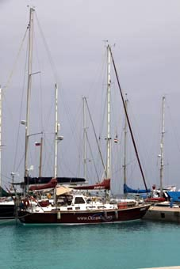 The ideal place to have done this writing was where we left you in Hurghada, Egypt. We had a few little jobs to do on the boat, but were sitting there primarily to let Peter’s knee have a good rest. But, as ever, make a plan and your God laughs. Both of our laptops packed up – the older one overheating and shutting down, the newer one refusing to show anything on the screen.
Jean, “The Fixer”, tracked down a young man who said he could repair them and, albeit with a few nerves on our part, he came down to the boat and took them off with him. What a star – a couple of days later, he called us up with what was wrong with them and what it would cost.
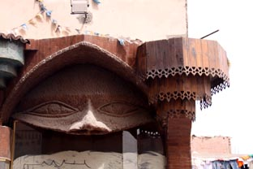 Sadly the older one was pretty cactus and would need major surgery so it was a matter of do what you can cheaply. He did what he could – charged only a few pounds but warned it was only a temporary fix – it was, it starts up and dies within 5 minutes again - but at least we could get everything important off it. So we’re writing this in the newer one which, touch wood, has preformed admirably ever since. If only it didn’t have Vista!
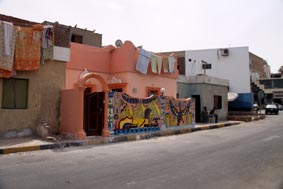 So our week in Hurghada started to drag a bit. We amused ourselves with sourcing the Pilot Books for Turkey and Greece, renewing our visa (and that took two days), wandering around taking photographs of the many facets of Hurghada, finding charts for Turkey and reading. One evening we got chatting with a young Pommy guy who turned out to be a sound engineer at a couple of the local dance clubs – the next night was memorable as we went along as his guest – Oh, we may have been the oldest by a long way, but Jean danced a lot of the youngsters into the dance floor. Long live the Ministry of Sound!
Waiting for a Weather Window
With the week up, the boat was ready to go, we were ready to go – but the weather thought otherwise. We became weather forecast junkies. We sat there for another four days, comparing weather reports with other yachts, watching some leave, only for them to return later shaking their heads or to call up on the radio to say they were sheltering 10 miles away in bad conditions.
We’d worked the charts and had several alternative ideas for the run up the Gulf of Suez, plotting all the possible bolt holes depending on what the weather threatened to do. At last, a day came when the weather forecast looked possible – several boats left early, but we hung around until after lunch waiting to see if the weather pattern we wanted had developed.
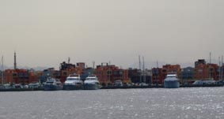 It had! The lows and highs were where we wanted them in the Med (these control the weather this high up the Red Sea) so it looked like we had a day or so of settled weather. The only down side was that there was even a chance of some southerly winds – and while we’d been praying for them since Eritrea, they can get nasty in the Gulf – there are only a couple of places you can shelter from southerly winds, and they have a tendency to create sand storms.
The decision was made, we were going – and at 16.50 we released our lines and finally left Hurghada.
The last bit of the Red Sea
And it was great timing – we motor sailed north through the reefs, finally popping out of the narrow passage of South Quism in the wee hours. We had reached the Gulf of Suez and with the forecast suggesting the winds would be better on the eastern side, we crossed the shipping lanes and headed north, dodging the huge oil platforms that dot the Gulf.
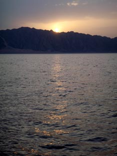
The dawn was one of the most spectacular we’d
seen in the Red Sea. Here it was more desert sweeping down
to the sea rather than the arid hills, and with a low sheen
of dust in the air, the dawn light reflecting from them was
a dusty orange.
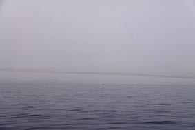
It’s a bay that is almost cut off from the sea by a reef running south. A narrow entrance still exists, well buoyed and with leads. Once through the entrance, the anchorage is to the north, just off a large concrete jetty. To the south, crowned by some nondescript corrugated iron industrial buildings, is a small hill on a point – it’s enough to stop the waves, but not high enough to stop the winds. To the north is a vast wind farm – hmm, we thought, maybe this is a pretty windy spot?
But it was the only place that offered any shelter so with the hook down and firm, we settled down to wait for the weather to pass, being joined by a couple of other yachts during the afternoon.
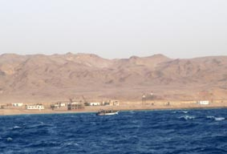 It was a very windy night, howling in the rigging, but we were safely tucked in. After calling down the weather GRIBS through the HF radio, we discussed about whether to stay another day or head on. Even though we were still seeing gusts over 35 kts, it was from the south and seemed likely to drop during the day. And we were so close to Port Suez – we could make it there before dark.
At first, it wasn’t too bad. We were running with the wind and while the seas were still pretty big, at last they were with us and we weren’t punching into them. We crossed the shipping channel again and hugged the eastern coast, making great time. Then, early afternoon and only 10 miles from Port Suez, the wind viscously swung north – we crossed our fingers and headed on, anxiously watching the shoreline as the visibility got worse and worse. We had a sand storm.
They are horrible. It gets everywhere. You can taste it – an iron burnt bread flavour – while your teeth grind the grit. It’s in your eyes and your ears – even with the boat battened down, it’s still gets down below, covering everything in a film of sand and dust.
And, of course, you can’t see much – visually
or on radar. Which offered to be problematic when trying to
enter a narrow channel with lots of big ships around.
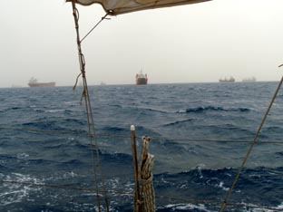
Ships transit the Suez Canal in convoys – it is too narrow for two-way traffic – and we knew that the southbound convoy was scheduled to finish coming through by 1700. We’d planned to come straight in – there’s a shallow bay just south of the start of the Canal – too shallow for the ships which have to follow a dredged channel, but deep enough for us to work our way up the outside of the channel. Then nip in for the ¼ mile of the Canal to the Suez Yacht Club – which you can do even with ships coming down if you can see them.
We couldn’t see much, so needed plan B. We couldn’t risk getting near the channel so it meant hanging around for a couple of hours and the seas were foul, steep, confused – we were like a cork in a wash tub. But near the entrance of the channel, all the big ships waiting for the next morning’s northbound convoy were anchored - just before we totally lost visibility we nipped across the entrance (giving ourselves bit of a scare when a big ship appeared out of the dust) and sheltered behind them with the engine ticking over to hold us in position – our own big floating breakwater.
Conditions started to improve and with the radar, we started to be able to see the convoy coming south. Once we’d identified the last ship, we headed up the outside of the channel until it passed – by the time we entered the Suez Canal, the wind had dropped and visibility was as good as a gentle misty English summer morning (albeit a bit warmer).
100 yards up the Canal is where it officially starts. WE HAD FINISHED WITH THE RED SEA!!!!!!!!!
The Suez Yacht Club, Paperwork and Fuel
The Suez Yacht Club is owned and run by the Suez Canal Authority (SCA) and is classically Egyptian. By this we mean it's got pretty good buildings and could be an outstanding facility, but it’s run down, dirty, chaotic.
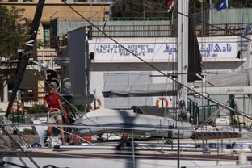
You can either moor bow and stern between
lines of buoys or, if there’s room, Med Moor on the
ramshackle, but secure floating T-shaped pontoon.
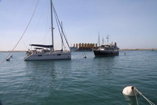
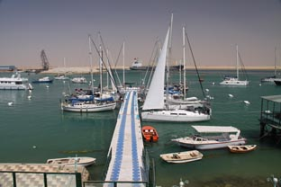
With the Med Mooring here, you go bow or
stern in – whichever end of the boat nearest the pontoon is
tied off there, the other end tied onto a big buoy. The
problem is that the buoys are big, steel and a fair way back
– it’s almost impossible to attach a line to them by
yourselves without the boat either drifting into another
boat or graunching the side of the boat on the buoy. Suez
Yacht Club is meant to have a runabout ready to help you –
to take your line to the buoy, but this being Egypt, its
engine was broken again. 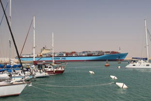
The Suez Canal – The Paperwork, Oh, the Paperwork
The Suez Canal is a totally separate entity from the rest of Egypt which meant that all our ship’s clearances and papers that had been issued in Port Ghalib were now finished. We needed a whole new set from the SCA, and this would involve getting Hinewai measured so that the transit fees could be calculated. And this could take days – you truly are in the lap of the Gods here.
But first, there are innumerable other forms to fill in and once we were berthed, the representative of FELIX arrived. FELIX is one of the two Agents who service the yachts here and it is their job to make sure everything is done correctly and within a reasonable time. It is said to be possible to avoid paying an Agent and to do everything yourself, but only if you have a lot of time (your papers WILL sit at the bottom of the in-tray) and the patience of a saint. We had neither.
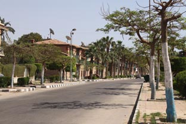
So we filled in the papers and settled down
to wait. There’s not an awful lot to do in Port Suez – we
went for a few walks locally. Near to the Club, some
of the buildings are surprisingly modern and nice looking,
but pretty much everything else is very run down and dirty
(but then you come round a corner and find a beautiful
public rose garden).
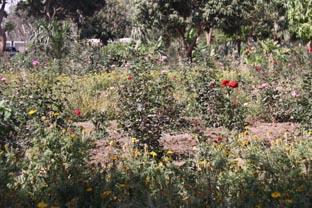
Several yachts were having problems with fuel, having arrived with low tanks. It used to be that you could get fuel in Jerry Cans, but the rules had changed (again). Now you had to move your yacht round to a dock, buy 600 ltrs of fuel with full formal customs approval (more paperwork and baksheesh). But not many yachts can take 600ltrs in one hit – too bad, it’s your choice if you don’t want to take what you’ve paid for. OK, how about several yachts get together and spread the 600ltrs? Nope – customs won’t allow that – there can only be one purchaser. Nor can you use Jerry Cans.
In the end, a couple of yachts with big tanks lent the others enough fuel to get to Ismailia where we had heard we could get fuel ….. or could we?
It was especially tight when we were there because the week before, a yachtie had been caught smuggling fuel in and lots of brown smelly stuff hit the fan.
Measurement and Pilots
The Suez Yacht Club works on a first in, first out policy and we worked out we were number 15 when we arrived. Yachts were leaving every couple of days in convoys of between 4 to 7 yachts so we were hopeful we wouldn’t be stuck here too long. We watched the measurers arrive on our second day, measure a dozen boats, but not us. Since they only come every three days or so, we were a little despondent, then joy, they arrived the next day as well. Unheard of.
The measuring is done based upon a formula determined back in the 1800’s and is designed to calculate the available space within a ship for its cargo. Charges are based upon this. Unfortunately, it doesn’t work too well for yachts and since the measurers all apply the rules in different ways, two identical yachts can end up with significantly (like hundreds of dollars) different fees.
Our measurer arrived on board and went through our Ships Papers, noting some of the measurements. Then, armed with his tape measure, he started to measure our topsides – the width and height of the cabin (we managed to persuade him that our pilot house is not part of the cargo carrying capacity of the yacht) and size of our engine room. We could see no rhyme or reason for some of the things he measured and when we compared notes with other yachties later, all of us had had various things measured that weren’t measured on others.
With the measuring done, we settled back again to wait to hear what our fees were to be and when there might be a pilot available.
Yes, a pilot. No vessels, including yachts, are allowed to transit the Canal without a pilot on board – which is sensible. Sadly, the pilots have a terrible reputation – for demanding “gifts”, being pretty irresponsible in how they drive the yachts, pushing engines hard to keep up speed (minimum speed is meant to be 6kts) – and just being slobs. We were dreading finding out if this reputation is true.
By this time, we were getting close to the top of the queue and were delighted when FELIX arrived that evening with all our papers and the fees – we’d done a rough calculation and the fees actually came in less than we'd estimated so we were happy – several others were not. And, we were to go in the convoy the next morning. We had to be ready at 08.00.
The first part of the Suez Canal transit
A couple of hours later, word came round that we’d now be leaving at 06.00, but we still didn’t believe it. From Jean’s daily chats on the radio net with some of the yachts that had already gone through, we knew that the pilots try and get away as early as possible. We decided we’d be up at 04.00 – we could always nap in the cockpit if we were wrong.
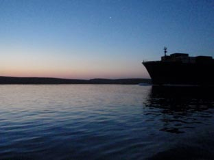
We weren’t – our pilot arrived ten minutes
after the alarm went off.
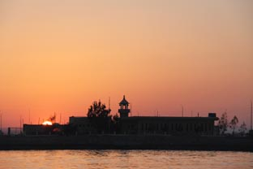
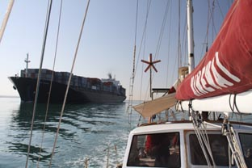 It's only a few hundred yards from the Club to the Canal and we could see the northbound convoy had already started. We tucked in on the left side of the Canal as the first huge ship came past us. It was a weird, although not scary, feeling as this cliff face of steel and lights slowly slid past us, maybe 100ft away, leaving us rolling in her wake.
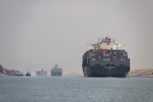
Dawn broke and we were motoring hard to keep
a speed over ground of 6kts (with 1kt of tide against us).
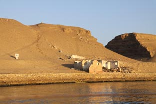
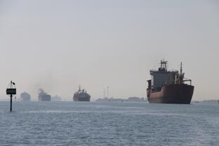 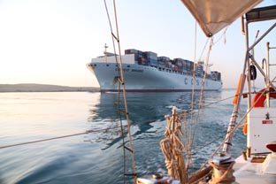 And we had to cross them. As you come into the Little Bitter Lake, the Canal has a couple of big sweeping turns followed by another couple in the Great Bitter Lake. As we entered LBL, our pilot had us move to the right so we could cut across the lakes, saving a good couple of miles. The GBL is the parking lot for the Southbound Convoy and was full of anchored ships of every colour, shape and size from every seafaring country in the world. They had headed south that morning from the Med and were now waiting for the Northbound convoy to pass so they could continue down towards the Red Sea.
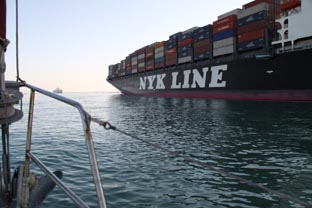 Then, at the top of the GBL, we had to get back to the left side of the canal, which necessitated ducking the stern of very large black freighter. Yes, Peter did whimper a bit.
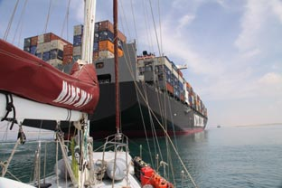
Our pilot, however, was wonderful. We'd
prepared for the worst, but our guy was a true gentleman -
polite, knowledgeable, and friendly. We chatted about the
reputation the Pilot's have and he said most of his
colleagues were very upset about it - as ever there are a
few bad apples that spoil it. Of the 20 or so yachts we
know who've done this now; only 2 have had any major
problems – including a sexual assault. The rest, have
ranged from very positive comments to slightly miffed. 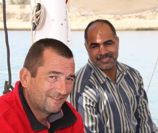
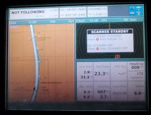 One of the big bugbears was the baksheesh the pilots expect (sorry “the gifts”). You are expected to tip the Pilot and give them a few small gifts - we had sorted a few things out but because our guy was so nice, we ended up giving him extra stuff - so being a nice guy works. Never, ever give them anything until they are about to get off the boat – not unless you don’t mind having your ear bent for the rest of the trip about how it’s not enough.
Ismailia – what a waste, but keen football supporters
After seven and a half hours, we branched off from the Canal into Ismailia which is about half way up the Canal. Yachts are not allowed to do the transit in one day and an overnight stop here is compulsory so we Med-Moored bow in at the Ismailia Yacht Marina. We planned to stay a few nights, leaving Hinewai at the marina while we did a side trip to Cairo.
Unsurprisingly, the Ismailia Yacht marina is a dive. When it was built a few years ago, it was touted that it would become a world class marina, even able to handle the large super-yachts like Galaxia. Well, somewhere along the way, they must have mislaid the plans. The buildings are attractive art deco from the distance, but close up look seedy – dirty, cracked tiles and patches where the rendering has fallen off. There are no facilities bar shore power and a pokey little café - and the loos and showers are grubby. It has a nice children’s playground though. Yes, we weren’t impressed.
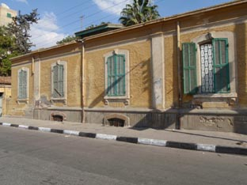 But the town of Ismailia is very different. It was laid out and built by Ferdinad De Lesseps, the French chap that built the Suez Canal, as the headquarters town for the Canal – a role it still has today. The older part of the town is laid out around two squares with eight streets radiating from each. Looking at his buildings, many of which were single storied with wooden shutters on the windows, sometimes with wide wooden verandas extending over the pavement, you can see it would have been a very elegant place with strong overtones of 19th Century Paris.
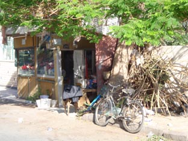 Today, it is faded elegance – a very faded elegance. It’s easy to break an ankle on the pavements and little of the wood has seen a lick of paint for many a year. We don’t think there is a word in Egyptian for “maintenance” – just let it fall down and stick up a shoddy concrete building.
And the people are just wonderful - without a doubt, the nicest group of Egyptians we met on the whole passage
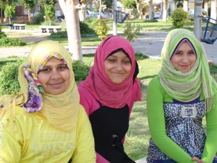 One of the main streets still has it though. Not surprisingly, it’s where the posh shops are and retains its avenue of broad shady trees. Here we discovered the “George Inn”, an ex-pats watering hole that served cold beer and excellent food. We’d been out getting some bread and doing a recon on the local supermarket (most stuff in Egypt is a lot cheaper than Turkey so we were planning a big stock up) and popped in for a cooling ale mid afternoon.
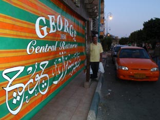 The staff greeted Peter like a long lost friend, chattering away and gesticulating at the TV playing in the corner. It slowly dawned on him that one of the teams was playing in a yellow strip and that day he was wearing his yellow Darwin Yacht Club shirt. The team playing in yellow was Ismailia and the staff thought he was wearing the shirt in support of their team – and it was an important match – if Ismailia beat Alexandria they would be at the top of the ladder.
By the end of the game, the place had ground to a halt. Even the kitchen staff was out watching the game. But sadly, it was a 1-1 draw.
Ismailia – bent coppers and fuel
Fuel continued to be top of mind. You have to motor up the Canal, sailing is not allowed, and you have to motor fast - which chews fuel - but the Suez Canal Authority will not sell you fuel. There’s no fuel dock in Ismailia.
So the procedure is - find a friendly Port Policeman, bribe him 50 Egyptian Pounds, find a friendly taxi-driver, bribe him 30 pounds over the 5 pound fare to take you and your jerry cans, go to a garage, bribe the attendant 10 pounds to fill your cans. Pay for fuel. Smuggle fuel back in to the club, hoping Port Policeman (who is not friendly, but a sleazy, money-grubbing thug) hasn't got greedy again and wants extra to let you back in.
We did two runs one day - paid the Port Police 10 pounds extra because it was going to be two runs - the first was OK, then when we got back the second time, he demanded another 50. Tony of Sunburnt, who was sharing our cab, was a tad annoyed and it was starting to get heated, but we knew we'd loose. A few days before, in exactly the same situation, the Port Police had won the argument by simply arresting the yachtie, confiscating his fuel, his jerry cans and his passport. He got the passport back after a couple of days.
The weekly wage for an Egyptian policeman is around 500-700 pounds. This guy is clearing a good three or four hundred a day - even allowing for what he must be giving his bosses to turn a blind eye! And there's not much you can do - make too much of a fuss, you get arrested and loose your fuel - make official complaints, you're no better off and will be spoiling it for the other cruisers following us.
But one good thing - his English is pretty poor so, with a smile of course, you can tell him to his face "You really are a sleazy little git." Because he doesn't understand, and 'cos you're smiling he nods. Pyrrhic maybe, but it feels good.
And, at the end of the day, even allowing for the bribes, it all works out to around US$0.20 a litre - easily the cheapest fuel we have ever had.
With two fuel runs (5 x 20ltr Jerry Cans per run) under our belt, we started to think about our trip to Cairo. So here seems a good spot to stop this page. In the next email, we tell you about Cairo and how Jean beat the slimy corrupt Port Policeman.
All the best
Peter & Jean
Next Log Page: Ismailia, half way up the Suez, and a side trip to Cairo
|
|
|
|
|
|
|
|
The Crew The Route The Yacht The Log Guestbook Links Contact Us |
|
|
|
|
|
Home |
|
|
All Original Content of this Web Site Copyright © 2000, 2001, 2002, 2003, 2004, 2005, 2006, 2007, 2008, 2009 Ocean Odyssey Pty Ltd |